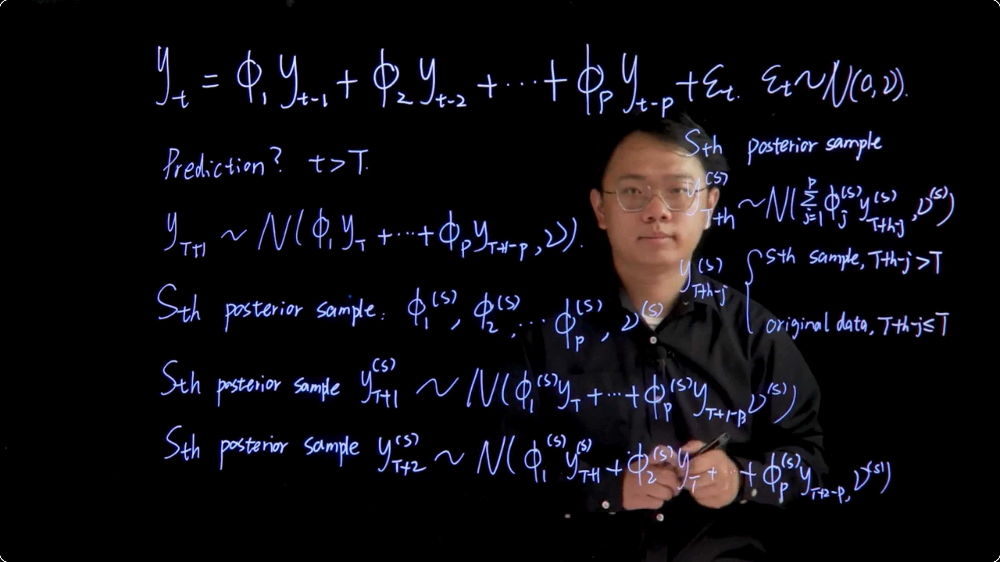

## read data, you need to make sure the data file is in your current working directory
earthquakes.dat <- read.delim("data/earthquakes.txt")
earthquakes.dat$Quakes=as.numeric(earthquakes.dat$Quakes)
y.dat=earthquakes.dat$Quakes[1:100] ## this is the training data
y.new=earthquakes.dat$Quakes[101:103] ## this is the test data
NoteLearning Objectives
103.1 Introduction 🎥
This is a capstone project for the Bayesian Statistics course. The instructor is a doctoral student Chi Joe Kao. I should point out that while he doesn’t have the pedigree of the other instructors, he was on one of the best explainers of the complex material. One downside is that is english is a little broken but I’ve had much worse. However you can see from the first slide that it covers the key concepts in a clear and concise manner leaving out very little. Also it seems to me that Chi Joe Kao still remembers how hard this material is at first glance which is a great asset for teaching it effectively. You may notice that we revisit some old material this is because this course makes a great effort to be self contained.
Many parts of this course are steps towards completing the capstone project. And perhaps just as exciting we will also cover a new type of model - a mixture version of the autoregressive model from the previous course.
We will cover the Bayesian conjugate analysis for autoregressive time series models. This sounds a bit bombastic, all it means is that we will be using a likelihood and a prior that leads to a conjugate posterior, keeping everything within one distributional family!
103.2 Prerequisite skill checklist 📖
NotePrerequisite skill checklist
103.2.1 Bayesian Statistics
103.2.2 Mixture Models
103.2.3 Time Series Analysis
103.3 Read Data 📖 ℛ
103.3.1 Earth Quake Data ℛ
103.3.2 Google Search Index Data ℛ
## read data, you need to make sure the data file is in your current working directory
covid.dat <- read.delim("data/GoogleSearchIndex.txt")
covid.dat$Week=as.Date(as.character(covid.dat$Week),format = "%Y-%m-%d")
y.dat=covid.dat$covid[1:57] ## this is the training data
y.new=covid.dat$covid[58:60] ## this is the test data103.4 Model Formulation 🎥
{kind=link}
{kind=link}
103.4.1 AR(p) model formulation
$$ y_t t \begin{cases} T>p \\ T=n+p \\ n>1 \end{cases}$$
AR(p)
\begin{aligned} y_t = \sum_{j=1}^p \phi_j y_{t-j} + \underbrace {\varepsilon_t}_{\text{innovations}} \qquad \begin{cases} \varepsilon_t \perp y_\tau\ & \forall \tau<t \\ \varepsilon_t \stackrel{iid}{\sim} \mathcal{N}(0,\nu) \end{cases} \end{aligned} \tag{103.1}
\begin{aligned} y_t &= \sum_{j=1}^p \phi_j y_{t-j} + {\varepsilon_t} & (\text{ normality of innovation})\\ &= \sum_{j=1}^p \phi_j y_{t-j} + \mathcal N(0,\nu) & (\text{linearity}) \\ &= \mathcal{N}(\sum_{j=1}^p \phi_j y_{t-j},\nu) & (\text{rewrite using design matrix})\\ &= \mathcal{N}(f_t \boldsymbol \phi,\nu) \\ \end{aligned}
\begin{aligned} \mathbb{P}r(y_{1:T}\mid \phi_1, \ldots, \phi_p, \nu ) &= \mathbb{P}r(y_{p+1:T})\prod_{t=p+1}^T \mathbb{P}r(y_t \mid y_{t-1},\ldots,y_{t-p},\phi_1,\ldots,\phi_p,\nu) \\ &= \prod_{t=p+1}^T \mathcal{N}(f_t\phi,\nu) \\ &= \mathcal{N}(F^\top \boldsymbol{\phi},\nu\mathbb{I}_n) \\ \end{aligned} \tag{103.2}
- where
- \boldsymbol{\phi}=(\phi_1,\ldots,\phi_p)^\top is the vector of parameters, and
- \nu is the scale parameter. and
- F is the design matrix
F= \begin{pmatrix} y_{p} & y_{p+1} & \cdots & y_{T-1} \\ y_{p-1} & y_{p} & \cdots & y_{T-2} \\ \vdots & \vdots & \vdots & \ddots & \vdots \\ y_{1} & y_{2} & \cdots & y_{T-p} \end{pmatrix} \tag{103.3}
103.4.2 Multiple Linear regression model formulation
y=(y_{p+1},\ldots,y_T) \in \mathbb{R}^n
y = F^\top \boldsymbol{\phi} + \varepsilon \qquad \varepsilon \sim \mathcal{N}(0,\nu\mathbb{I}_n) \mathbb{P}r(y \mid \boldsymbol{\phi},\nu) = \mathcal{N}(F^\top \boldsymbol{\phi},\nu\mathbb{I}_n) \mathbf{y}\sim \mathcal{N}(\mathbf{F}^\top \boldsymbol{\phi},\nu\mathbf{I}_n),\quad \boldsymbol{\phi}\sim \mathcal{N}(\mathbf{m}_0,\nu\mathbf{C}_0),\quad \nu\sim IG(\frac{n_0}{2},\frac{d_0}{2}) \tag{103.4}
where:
NoteQuestion
Suppose we have a multiple linear regression model y=\mathbf{X}\beta+\varepsilon where \varepsilon \sim\mathcal{N}(0,\sigma^2I) what is the proper conditional conjugate prior for parameters \beta and \sigma^2?
Solution
I got this right the first time by eyeballing it. So I’m not sure why it is right other than the the others are missing something.
103.5 Review: Useful Distributions 📖 ℛ
This is material a review of three distributions we have seen frequently in relation to modeling with Normal distribution - our default model in many cases.
- The multivariate normal distribution is used to model multiple correlated variables
- The inverse-gamma distribution is used as a prior for the variance for Normally distributed data when the mean is known and the variance is unknown.
- The multivariate Student-t distribution is a robust alternative to the multivariate normal distribution when the data has outliers or is not normally distributed.
103.5.1 The multivariate normal distribution
A k-dimensional random vector x=(x_1, \cdots, x_k)^T that follows a multivariate normal distribution with mean \mu and variance-covariance matrix \Sigma is denoted as x \sim \mathcal{N}(\mu, \Sigma) or p(x) = \mathcal{N}(x \mid \mu, \Sigma) has a density function given by: p(\mathbf{x})=(2\pi)^{-k/2}|\boldsymbol{\Sigma}|^{-1/2}\exp[-\frac{1}{2}(\mathbf{x}-\boldsymbol{\mu})^T\boldsymbol{\Sigma}^{-1}(\mathbf{x}-\boldsymbol{\mu})] \tag{103.5}
where \mathbf{x} is a k-dimensional vector, |\boldsymbol{\Sigma}| is the determinant of the covariance matrix, and \boldsymbol{\Sigma}^{-1} is the inverse of the covariance matrix.
103.5.2 The gamma and inverse-gamma distribution
A random variable x that follows a gamma distribution with shape parameter \alpha and inverse scale parameter \beta , denoted as x \sim \mathcal{G}(\alpha, \beta), or \mathbb{P}r(x) = \mathcal{G}(x \mid \alpha, \beta), has a density of the form \mathbb{P}r(x)=\frac{\beta^{\alpha}}{\Gamma(\alpha)}x^{\alpha-1}e^{-\beta x},\quad x>0 \tag{103.6}
where \alpha is the shape parameter, \beta is the rate parameter, and \Gamma(\alpha) is the gamma function evaluated at \alpha.
In addition, \mathbb{E}[x]=\frac{\alpha}{\beta} \qquad \mathbb{V}ar[x]=\frac{\alpha}{\beta^2}
If 1/x \sim G(\alpha, \beta), then x follows an inverse-gamma distribution X\sim \mathcal{IG}(\alpha, \beta). or p(x) = \mathcal{IG}(X\mid \alpha, \beta). with
\mathbb{P}r(x)=\frac{\beta^{\alpha}}{\Gamma(\alpha)}x^{-(\alpha+1)}e^{-\beta/x},\quad x>0 \tag{103.7}
where \alpha is the shape parameter, \beta is the scale parameter, and \Gamma(\alpha) is the gamma function evaluated at \alpha.
in this case
\mathbb{E}[x]=\frac{\beta}{\alpha-1} \quad \text{for } \alpha > 1 \qquad \mathbb{V}ar[x]=\frac{\beta^2}{(\alpha-1)^2(\alpha-2)} \quad \text{for } \alpha > 2 \tag{103.8}
103.5.3 The multivariate Student-t distribution
A random vector x of dimension k follows a multivariate Student-t distribution with \nu degrees of freedom, location \boldsymbol{\mu}, and scale matrix \boldsymbol{\Sigma}, denoted as x \sim T_\nu(\boldsymbol{\mu}, \boldsymbol{\Sigma}), if its density is given by:
\mathbb{P}r(\mathbf{x})=\frac{\Gamma(\frac{\nu+k}{2})}{\Gamma(\frac{\nu}{2})(\nu\pi)^{k/2}}|\boldsymbol{\Sigma}|^{-1/2}[1+\frac{1}{\nu}(\mathbf{x}-\boldsymbol{\mu})^T\boldsymbol{\Sigma}^{-1}(\mathbf{x}-\boldsymbol{\mu})]^{-(\nu+k)/2}
\mathbb{E}[x]=\mu \text{ for } \nu>1 \qquad \mathbb{V}ar[x]=\frac{\nu\Sigma}{\nu−2} \quad \text{for } \nu>2
103.6 Posterior Distribution Derivation 📖
In this lesson, I present the derivation of the posterior distributions for \boldsymbol{\phi} and \nu for the following model:
\mathbf{y}\sim \mathcal{N}(\mathbf{F}^\top \boldsymbol{\phi},\nu\mathbf{I}_n),\quad \boldsymbol{\phi}\sim \mathcal{N}(\mathbf{m}_0,\nu\mathbf{C}_0),\quad \nu\sim IG(\frac{n_0}{2},\frac{d_0}{2}) \tag{103.9}
where :
- \mathbf{y} is the observed data,
- \mathbf{F} is the design matrix,
- \boldsymbol{\phi} is the vector of parameters,
- \nu is the scale parameter,
- \mathbf{m}_0 is the prior mean of \boldsymbol{\phi},
- \mathbf{C}_0 is the prior covariance matrix of \boldsymbol{\phi},
- n_0 and d_0 are the shape and scale parameters of the inverse-gamma prior for \nu.
i.e. we start with a Normal likelihood with a Normal prior for \boldsymbol{\phi} and an inverse-gamma prior for \nu. Since we call the parameters \phi and not \theta it suggests that this isn’t a typical linear regression but rather an AR(p) model with
I recall that we already did this derivation in the first course by Herbert Lee.
Using Bayes theorem, we have :
\begin{aligned} \mathbb{p}r(\boldsymbol{\phi},\nu\mid\mathbf{y}) & \propto \mathbb{p}r(\mathbf{y} \mid \boldsymbol{\phi},\nu)\mathbb{p}r(\boldsymbol{\phi}\mid\nu)\mathbb{p}r(\nu)\\ &\propto \nu^{-n/2}\exp \left(-\frac{(\mathbf{y}-\mathbf{F}^T\boldsymbol{\phi})^T(\mathbf{y}-\mathbf{F}^T\boldsymbol{\phi})}{2\nu}\right)\\ &\quad \times \nu^{-p/2}\exp\left(-\frac{(\boldsymbol{\phi}-\mathbf{m}_0)^T\mathbf{C}_0^{-1}(\boldsymbol{\phi}-\mathbf{m}_0)}{2\nu}\right)\\ &\quad \times \nu^{-(\frac{n_0}{2}+1)}\exp\left(-\frac{d_0}{2\nu}\right)\\ &\propto \nu^{-(\frac{n^*}{2}+1)}\exp\left(-\frac{d^*}{2\nu}\right)\\ &\quad \times \nu^{-p/2}\exp\left(-\frac{(\boldsymbol{\phi}-\mathbf{m})^T\mathbf{C}^{-1}(\boldsymbol{\phi}-\mathbf{m})}{2\nu}\right)\\ &\propto \mathbb{p}r(\nu\mid\mathbf{y})\mathbb{p}r(\boldsymbol{\phi}\mid\nu,\mathbf{y}) \end{aligned} \tag{103.10}
where
\begin{aligned} \mathbf{e}&=\mathbf{y}-\mathbf{F}^T\mathbf{m}_0, &\mathbf{Q}&=\mathbf{F}^T\mathbf{C}_0\mathbf{F}+\mathbf{I}_n,\quad \mathbf{A}=\mathbf{C}_0\mathbf{F}\mathbf{Q}^{-1}\\ \mathbf{m}&=\mathbf{m}_0+\mathbf{A}\mathbf{e},\quad &\mathbf{C}&=\mathbf{C}_0-\mathbf{A}\mathbf{Q}\mathbf{A}^{T}\\ n^* &=n+n_0,\quad &d^*&=(y-\mathbf{F}^T\mathbf{m}_0)^T\mathbf{Q}^{-1}(y-\mathbf{F}^T\mathbf{m}_0)+d_0 \end{aligned} \tag{103.11}
Therefore, we have the posterior distribution of \boldsymbol{\phi} and \nu as:
\begin{aligned} \mathbb{P}r(\boldsymbol{\phi},\nu \mid \mathbf{y}) &=\mathbb{P}r(\boldsymbol{\phi} \mid \nu,\mathbf{y})\mathbb{P}r(\nu\mid \mathbf{y}) \\ &=\mathcal{N}(\boldsymbol{\phi}\mid \mathbf{m},\nu\mathbf{C})\ \mathcal{IG}(\nu\mid \frac{n^*}{2},\frac{d^*}{2}) \end{aligned} \tag{103.12}
To get the sth sample of (\boldsymbol{\phi}^{(s)},\nu^{(s)}) from the joint posterior distribution of \boldsymbol{\phi} and \nu, we first sample \nu^{(s)} from \mathcal{IG}(\frac{n^*}{2},\frac{d^*}{2}), then sample \boldsymbol{\phi}^{(s)} from \mathcal{N}(\boldsymbol{m},\nu^{(s)}\boldsymbol{C}).
One can also obtain posterior samples of \boldsymbol{\phi} by directly sampling from its marginal posterior distribution. Integrate out \nu from the joint posterior distribution, we have \mathbb{P}r(\boldsymbol{\phi} \mid \mathbf{y})=T_{n^*}(\boldsymbol{m},\frac{d^*}{n^*}\boldsymbol{C}).
Denote the sth posterior sample of \boldsymbol{\phi} and \nu as \boldsymbol{\phi}^{(s)} and \nu^{(s)}, we can obtain the corresponding ith posterior sample of \mathbf{y}^{(s)} by sampling from \mathcal{N}(\mathbf{F}^\top \boldsymbol{\phi}^{(s)},\nu^{(s)}). Therefore, we can obtain the posterior point and interval estimates for the time series.
103.7 AR model fitting example
103.7.1 Bayesian Conjugate Analysis of AR Model
103.7.1.1 Simulate Data
We give an example about fitting an AR(2) model using simulated data. We simulate 200 observations from the following model:
y_t=0.5y_{t-1}+0.4y_{t-2}+\varepsilon_t,\quad \varepsilon_t\sim N(0,1) \tag{103.13}
## simulate data
phi1=0.5
phi2=0.4
v=1
set.seed(1)
y.sample=arima.sim(n=200,model=list(order=c(2,0,0),ar=c(phi1,phi2),sd=sqrt(v)))
plot.ts(y.sample,ylab=expression(italic(y)[italic(t)]),xlab=expression(italic(t)),
main=''){kind=link}
Now, we perform a prior sensitivity analysis for the choice of hyperparameters in prior distribution. We choose three sets of prior hyperparameters and plot the posterior distribution for \mathbb{P}r(\phi_1, \phi_2 \mid y_{1:n}) below. The three sets of prior hyperparameters are :
\begin{aligned} & (1) \quad \mathbf{m}_0=(0,0)^T,\mathbf{C}_0=I_2,n_0=2,d_0=2\\ & (2) \quad \mathbf{m}_0=(0,0)^T,\mathbf{C}_0=I_2,n_0=6,d_0=1\\ & (3) \quad \mathbf{m}_0=(-0.5,-0.5)^T,\mathbf{C}_0=I_2,n_0=6,d_0=1 \end{aligned}
In the plot, the left, middle and right panel correspond to the first, second and last sets of hyperparameters, respectively.
## prior sensitivity analysis
## plot posterior distribution of phi_1 and phi_2 on a grid
library(colorRamps)
library(leaflet)
library(fields)Loading required package: spamSpam version 2.11-1 (2025-01-20) is loaded.
Type 'help( Spam)' or 'demo( spam)' for a short introduction
and overview of this package.
Help for individual functions is also obtained by adding the
suffix '.spam' to the function name, e.g. 'help( chol.spam)'.
Attaching package: 'spam'The following objects are masked from 'package:base':
backsolve, forwardsolveLoading required package: viridisLite
Try help(fields) to get started.
Attaching package: 'fields'The following object is masked from 'package:leaflet':
addLegendlibrary(mvtnorm)
Attaching package: 'mvtnorm'The following objects are masked from 'package:spam':
rmvnorm, rmvt## generate grid
coordinates_1=seq(-3,3,length.out = 100)
coordinates_2=seq(-3,3,length.out = 100)
coordinates=expand.grid(coordinates_1,coordinates_2)
coordinates=as.matrix(coordinates)
## set up
N=100
p=2 ## order of AR process
n.all=length(y.sample) ## T, total number of data
Y=matrix(y.sample[3:n.all],ncol=1)
Fmtx=matrix(c(y.sample[2:(n.all-1)],y.sample[1:(n.all-2)]),nrow=p,byrow=TRUE)
n=length(Y)
## function to compute parameters for the posterior distribution of phi_1 and phi_2
## the posterior distribution of phi_1 and phi_2 is a multivariate t distribution
cal_parameters=function(m0=matrix(c(0,0),nrow=2),C0=diag(2),n0,d0){
e=Y-t(Fmtx)%*%m0
Q=t(Fmtx)%*%C0%*%Fmtx+diag(n)
Q.inv=chol2inv(chol(Q)) ## similar as solve, but more robust
A=C0%*%Fmtx%*%Q.inv
m=m0+A%*%e
C=C0-A%*%Q%*%t(A)
n.star=n+n0
d.star=t(Y-t(Fmtx)%*%m0)%*%Q.inv%*%(Y-t(Fmtx)%*%m0)+d0
params=list()
params[[1]]=n.star
params[[2]]=d.star
params[[3]]=m
params[[4]]=C
return(params)
}
## evaluate density at the grid points
get_density=function(param){
location=param[[3]]
scale=as.numeric(param[[2]]/param[[1]])*param[[4]]
density=rep(0,N^2)
for (i in 1:N^2) {
xi=coordinates[i,]
density[i]=dmvt(xi,delta=location,sigma=scale,df=param[[1]])
}
density_expand=matrix(density,nrow=N)
return(density_expand)
}
## calculate density for three sets of hyperparameters
params1=cal_parameters(n0=2,d0=2)
params2=cal_parameters(n0=6,d0=1)
params3=cal_parameters(m0=matrix(c(-0.5,-0.5),nrow=2),n0=6,d0=1)
col.list=matlab.like2(N)
Z=list(get_density(params1),get_density(params2),get_density(params3))
op <- par(mfrow = c(1,3),
oma = c(5,4,0,0) + 0.1,
mar = c(4,4,0,0) + 0.2)
image(coordinates_1,coordinates_2,Z[[1]],col=col.list,
zlim=range(unlist(Z)),xlab=expression(phi[1]),ylab=expression(phi[2]))
image(coordinates_1,coordinates_2,Z[[2]],col=col.list,
zlim=range(unlist(Z)),xlab=expression(phi[1]),ylab=expression(phi[2]))
image(coordinates_1,coordinates_2,Z[[3]],col=col.list,
zlim=range(unlist(Z)),xlab=expression(phi[1]),ylab=expression(phi[2])){kind=link}
Since we change the value of hyperparameters but the posterior is almost the same, we can conclude that the posterior distribution of both AR coefficients and variance are robust w.r.t. the choice of hyperparameters.
Posterior Inference We now sample 5000 sets of (\phi_1, \phi_2, \nu) from their marginal posterior distributions and plot them. For prior hyperparameters, we take m_0=(0,0)^\top, C_0=I_2, n_0=2, and d_0=2.
m0=matrix(rep(0,p),ncol=1)
C0=diag(p)
n0=2
d0=2
e=Y-t(Fmtx)%*%m0
Q=t(Fmtx)%*%C0%*%Fmtx+diag(n)
Q.inv=chol2inv(chol(Q))
A=C0%*%Fmtx%*%Q.inv
m=m0+A%*%e
C=C0-A%*%Q%*%t(A)
n.star=n+n0
d.star=t(Y-t(Fmtx)%*%m0)%*%Q.inv%*%(Y-t(Fmtx)%*%m0)+d0
n.sample=5000
nu.sample=rep(0,n.sample)
phi.sample=matrix(0,nrow=n.sample,ncol=p)
for (i in 1:n.sample) {
set.seed(i)
nu.new=1/rgamma(1,shape=n.star/2,rate=d.star/2)
nu.sample[i]=nu.new
phi.new=rmvnorm(1,mean=m,sigma=nu.new*C)
phi.sample[i,]=phi.new
}
par(mfrow=c(1,3))
hist(phi.sample[,1],freq=FALSE,xlab=expression(phi[1]),main="",ylim=c(0,6.4))
lines(density(phi.sample[,1]),type='l',col='red')
hist(phi.sample[,2],freq=FALSE,xlab=expression(phi[2]),main="",ylim=c(0,6.4))
lines(density(phi.sample[,2]),type='l',col='red')
hist(nu.sample,freq=FALSE,xlab=expression(nu),main="")
lines(density(nu.sample),type='l',col='red'){kind=link}
103.7.2 Model Checking by In-sample Point and Interval Estimation
To check whether the model fits well, we plot the posterior point and interval estimate for each point.
## get in sample prediction
post.pred.y=function(s){
beta.cur=matrix(phi.sample[s,],ncol=1)
nu.cur=nu.sample[s]
mu.y=t(Fmtx)%*%beta.cur
sapply(1:length(mu.y), function(k){rnorm(1,mu.y[k],sqrt(nu.cur))})
}
y.post.pred.sample=sapply(1:5000, post.pred.y)## show the result
summary.vec95=function(vec){
c(unname(quantile(vec,0.025)),mean(vec),unname(quantile(vec,0.975)))
}
summary.y=apply(y.post.pred.sample,MARGIN=1,summary.vec95)
plot(Y,type='b',xlab='Time',ylab='',ylim=c(-7,7),pch=16)
lines(summary.y[2,],type='b',col='grey',lty=2,pch=4)
lines(summary.y[1,],type='l',col='purple',lty=3)
lines(summary.y[3,],type='l',col='purple',lty=3)
legend("topright",legend=c('Truth','Mean','95% C.I.'),lty=1:3,col=c('black','grey','purple'),
horiz = T,pch=c(16,4,NA))
103.8 Prediction for AR Models 🎥
AR(p) Model:

y_t = \phi_1 y_{t-1} + \phi_2 y_{t-2} + \cdots + \phi_p y_{t-p} + \varepsilon_t, \qquad \varepsilon_t\sim \mathcal{N}(0,\nu)
where (\varepsilon_t) follows a normal distribution with mean zero and variance (\nu).
First Step Ahead Prediction, t>T : y_{T+1} \sim \mathcal{N}(\phi_1 y_T + \ldots + \phi_p y_{T+1-p}, \nu)
General H-Step Ahead Prediction:
y_{T+S}^s \sim \mathcal{N}\left(\sum_{j=1}^{p} \phi_j^s y_{T+s-j}^s, \nu^{(s)}\right)
where (\phi_j^s) and (\nu^{(s)}) are the posterior samples of the parameters.
103.9 AR model prediction example 📖 ℛ
We now give an example for coding the prediction algorithm in R. Consider the simulated data in the previous class, an AR(2) model with 200 observations obtained from y_t=0.5y_{t−1}+0.4y_{t−2}+\varepsilon_t,\varepsilon_t\sim \mathcal{N}(0,1).
Before doing the prediction, we have to obtain posterior samples of model parameters \phi and \nu, which has been taught in the previous class. Here we just copy the code from previous to obtain 5000 posterior samples of \phi and \nu
library(mvtnorm)
## simulate data
phi1<-0.5
phi2<-0.4
v<-1
set.seed(1)
y.sample=arima.sim(n=200,model=list(order=c(2,0,0),ar=c(phi1,phi2),sd=sqrt(v)))
## set up
N<-100
p<-2 # order of AR process
n.all=length(y.sample) ## T, total number of data
Y=matrix(y.sample[3:n.all],ncol=1)
Fmtx=matrix(c(y.sample[2:(n.all-1)],y.sample[1:(n.all-2)]),nrow=p,byrow=TRUE)
n=length(Y)
## posterior inference
## set the prior
m0=matrix(rep(0,p),ncol=1)
C0=diag(p)
n0=2
d0=2
## calculate parameters that will be reused in the loop
e=Y-t(Fmtx)%*%m0
Q=t(Fmtx)%*%C0%*%Fmtx+diag(n)
Q.inv=chol2inv(chol(Q))
A=C0%*%Fmtx%*%Q.inv
m=m0+A%*%e
C=C0-A%*%Q%*%t(A)
n.star=n+n0
d.star=t(Y-t(Fmtx)%*%m0)%*%Q.inv%*%(Y-t(Fmtx)%*%m0)+d0
n.sample=5000
## store posterior samples
nu.sample=rep(0,n.sample)
phi.sample=matrix(0,nrow=n.sample,ncol=p)
for (i in 1:n.sample){
set.seed(i)
nu.new=1/rgamma(1,shape=n.star/2,rate=d.star/2)
nu.sample[i]=nu.new
phi.new=rmvnorm(1,mean=m,sigma=nu.new*C)
phi.sample[i,]=phi.new
}After running the code, 5000 posterior samples of \phi and \nu are stored in phi.sample and nu.sample.
The h-step ahead prediction can be obtained by the following code:
## the prediction function
y_pred_h_step=function(h.step,s){
phi.cur=matrix(phi.sample[s,],ncol=1)
nu.cur=nu.sample[s]
y.cur=c(y.sample[200],y.sample[199])
y.pred=rep(0,h.step)
for (i in 1:h.step) {
mu.y=sum(y.cur*phi.cur)
y.new=rnorm(1,mu.y,sqrt(nu.cur))
y.pred[i]=y.new
y.cur=c(y.new,y.cur)
y.cur=y.cur[-length(y.cur)]
}
return(y.pred)
}For illustration purposes, we obtain 3-step ahead predictions. The posterior distribution of Y_{201}, Y_{202}, Y_{203}, denoted as Y_{201}, Y_{202}, Y_{203}, is given by:
set.seed(1)
y.post.pred.ahead=sapply(1:5000, function(s){y_pred_h_step(h.step=3,s=s)})
par(mfrow=c(1,3))
hist(y.post.pred.ahead[1,],freq=FALSE,xlab=expression(y[201]),main="")
lines(density(y.post.pred.ahead[1,]),type='l',col='red')
hist(y.post.pred.ahead[2,],freq=FALSE,xlab=expression(y[202]),main="")
lines(density(y.post.pred.ahead[2,]),type='l',col='red')
hist(y.post.pred.ahead[3,],freq=FALSE,xlab=expression(y[203]),main="")
lines(density(y.post.pred.ahead[3,]),type='l',col='red'){kind=link}
summary.vec95=function(vec){
c(unname(quantile(vec,0.025)),mean(vec),unname(quantile(vec,0.975)))
}
apply(y.post.pred.ahead,MARGIN=1,summary.vec95) [,1] [,2] [,3]
[1,] -1.88717944 -2.12253036 -2.52266829
[2,] 0.06139962 0.04574706 0.03225995
[3,] 2.00420428 2.14813228 2.61098539Posterior mean and 95% confidence interval for \phi_1 and \phi_2 can be obtained by
summary.vec95=function(vec){
c(unname(quantile(vec,0.025)),mean(vec),unname(quantile(vec,0.975)))
}
apply(y.post.pred.ahead,MARGIN=1,summary.vec95) [,1] [,2] [,3]
[1,] -1.88717944 -2.12253036 -2.52266829
[2,] 0.06139962 0.04574706 0.03225995
[3,] 2.00420428 2.14813228 2.61098539103.10 Extended AR model 📖
This is a five page Arima handout
I have however added some callouts with question and counterexamples to assist my understanding of this and earlier material.
103.10.1 Extending AR Models for Complex Time Series Data
After we finished learning the materials from this module, you may wonder why we started with AR models. As we mentioned at the beginning, AR models are central to stationary time series data analysis and, as components of larger models or in suitably modified and generalized forms, underlie nonstationary time-varying models. This reading material will give examples about extending AR models for complex time series data. Hopefully these notes will help you build up confidence to this relatively simple model.
103.10.2 Autoregressive Moving Average Models (ARMA)
103.10.2.1 Characteristic polynomial of AR processes
An AR(p) process y_t is said to be causal if it can be written as a one-sided linear process dependent on the past
causal Ar(p)
y_t= \Phi(\operatorname{B})\varepsilon_t= \sum_{j=0}^{\infty} \psi_j \varepsilon_{t-j} \tag{103.14}
Where \operatorname{B} is the backshift operator, with \operatorname{B}\varepsilon_{t} = \varepsilon_{t−1}, \psi_0 = 1 and \sum_{j=0}^{\infty} |\psi_j | < \infty.
y_t is causal only when the autoregressive characteristic polynomial, defined as \Phi(u) = 1 - \sum_{j=1}^{p} \phi_j u^j \tag{103.15}
Has roots with moduli greater than unity. That is, y_t is causal if \Phi(u) = 0 only when |u| > 1. This causality condition implies stationarity, and so it is often referred as the stationary condition in the time series literature. The autoregressive characteristic polynomial can also be written as \Phi(u) = \prod_{j=1}^{p}(1 - \alpha_j u), so that its roots are the reciprocals of the \alpha_j’s. The \alpha_j’s may be real-valued or may appear as pairs of complex conjugates. Either way, if |\alpha_j| < 1 for all j, the process is stationary.
causality \implies stationaritystationary condition
103.10.3 Structure of ARMA models
Consider a time series y_t, for t = 1, 2, \cdots, arising from the model
y_t= \sum_{i=1}^{p} \phi_i y_{t-i} + \sum_{j=1}^{q} \theta_j \varepsilon_{t-j} + \varepsilon_t \tag{103.16}
With \varepsilon_t \sim \mathcal{N}(0, \nu). Then, \{y_t\} follows an autoregressive moving average model, or ARMA(p, q), where p and q are the orders of the autoregressive and moving average parts, respectively. When p = 0, \{y_t\} is said to be a moving average process of order q or MA(q). Similarly, when q = 0, \{y_t\} is an autoregressive process of order p or AR(p).
ARMA(p,q)
Example 103.1 (MA(1) process) If \{y_t\} follows a MA(1) process, y_t = \theta y_{t-1} + \varepsilon_t, the process is stationary for all the values of \theta. In addition, it is easy to see that the autocorrelation function has the following form:
\rho(h) = \begin{cases} 1 & h = 0 \\ \frac{\theta}{1 + \theta^2} & h = 1 \\ 0 & \text{o.w.} \end{cases} \tag{103.17}
Now, if we consider a MA(1) process with coefficient 1 instead of \theta, we would obtain the same correlation function, and so it would be impossible to determine which of the two processes generated the data. Therefore, it is necessary to impose identifiability conditions on \theta. In particular, \frac{1}{\theta} > 1 is the identifiability condition for a MA(1), which is also known as the invertibility condition, given that it implies that the MA process can be “inverted” into an infinite order AR process.
invertibility condition
In general, a MA(q) process is identifiable or invertible only when the roots of the MA characteristic polynomial \Theta(u) = 1 + \theta_1 u + \ldots + \theta_q u^q lie outside the unit circle. In this case it is possible to write the MA process as an infinite order AR process.
WarningOrder \neq Memory of MA(p) or AR(q) processes
Throughout this unit and also before we are told about a finite order AR(p) \eq MA(\infty) and MA(q)=AR(\infty). If like me you think this is a strange claim then perhaps you don’t understand the AR(1) and the MA(1) processes as well as you think.
The main issue here is understanding the relation of the parameters AR(p) and MA(q) and the memory of the process. If at some point you equate p or q in these processes to their memory you are due to a rude awakening. P and Q are just the number of parameters in the AR or MA process, they are the dimensions of matrices that represent the process.
However, the actual memory of the process is determined by the behavior of the coefficients as the time goes to infinity. We can show how AR(1) and MA(1) can easily remember infinite number of past values.
When we wish to represent such an AR(1) or MA(1) using their opposite we will quickly find counterexamples that require infinite number of parameters to represent the same process. In fact I would venture to say that only trivial or specially constructed AR and MA processes (e.g., white noise) are mutual finite-order representations. Most are infinite in one form or the other.
Example 103.2 (🔴 AR(1) That Can’t Be Represented as Finite MA(q)) Consider the stationary AR(1) process:
Y_t = \phi Y_{t-1} + \varepsilon_t, \quad |\phi| < 1
The infinite MA(∞) representation is:
Y_t = \sum_{j=0}^{\infty} \phi^j \varepsilon_{t-j}
Suppose we ask: can we find any finite q such that:
Y_t = \varepsilon_t + \theta_1 \varepsilon_{t-1} + \dots + \theta_q \varepsilon_{t-q}
Then we would need:
\phi^j = 0 \quad \text{for some finite } j > q
But this is impossible unless \phi = 0, which trivializes the AR(1) to white noise.
👉 Therefore: A stationary AR(1) process (with \phi \neq 0) has infinite memory, and cannot be exactly represented as a finite MA(q).
Now here’s a simple counterexample that shows a finite AR(p) can’t always be expressed exactly as a finite MA(q).
Example 103.3 (🔴 MA(1) That Can’t Be Represented as Finite AR(p)) Now consider an MA(1):
Y_t = \varepsilon_t + \theta \varepsilon_{t-1}, \quad \theta \neq 0
To write it as a finite AR(p), we would need:
Y_t = \phi_1 Y_{t-1} + \phi_2 Y_{t-2} + \dots + \varepsilon_t
But again, this fails except in special cases. For invertible \theta, we can write an AR(∞):
Y_t = \sum_{j=1}^\infty \phi_j Y_{t-j} + \varepsilon_t
But truncating at any finite p yields approximation, not exact identity.
For an ARMA(p, q) process, the stationary condition is given in terms of the AR coefficients, i.e., the process is causal only when the roots of the AR characteristic polynomial \Phi(u) = 1 − \phi_1 u − \ldots − \phi_p u^p lie outside the unit circle. The ARMA process is invertible only when the roots of the MA characteristic polynomial lie outside the unit circle.
So, if the ARMA process is causal and invertible, it can be written either as a purely AR process of infinite order, or as a purely MA process of infinite order.
If \{y_t\} follows an ARMA(p,q) we can write \Phi(B)y_t = \Theta(B)\varepsilon_t, with
\begin{aligned} \Phi(B) &= 1 − \phi_1\operatorname{B} − \ldots − \phi_p\operatorname{B}^p \\ \Theta(B) &= 1 + \theta_1\operatorname{B} + \ldots + \theta_q\operatorname{B}^q \end{aligned} \tag{103.18}
- where:
- \operatorname{B} is the backshift operator.
- \Phi(\operatorname{B}) is the autoregressive characteristic polynomial of the ARMA model, with roots \alpha_i and
- \Theta(\operatorname{B}) is the moving average characteristic polynomial of the ARMA model, with roots \beta_j.
If the process is causal then we can write it as a purely MA process of infinite order
y_t = \Phi(\operatorname{B})^{-1}\Theta(\operatorname{B})\varepsilon_t = \Psi(\operatorname{B})\varepsilon_t = \sum_{j=0}^{\infty} \psi_j \varepsilon_{t-j} \tag{103.19}
with \Psi(\operatorname{B}) such that \Phi(\operatorname{B})\Psi(\operatorname{B}) = \Theta(\operatorname{B}). The \psi_j values can be found by solving the homogeneous difference equations given by: \psi_j − \sum_{h=1}^{p} \phi_h\psi_{j−h} = \theta_j, \qquad j \ge \max (p, q + 1) \tag{103.20}
where \phi_h are the AR coefficients and \psi_j are the MA coefficients. with initial conditions:
\psi_j − \sum_{h=1}^{j} \phi_h\psi_{j−h} = \theta_j , \qquad 0 ≤ j < \max(p, q + 1) \tag{103.21}
and θ_0. The general solution to the Equations Equation 103.19 and Equation 103.20 is given by
\psi_j = \alpha_1^j p_1(j) + \ldots + \alpha_r^j p_r(j) \tag{103.22}
where \alpha_1, \ldots, \alpha_r are the reciprocal roots of the characteristic polynomial \Phi(u) = 0, with multiplicities m_1, \ldots, m_r, respectively, and each p_i(j) is a polynomial of degree m_i - 1.
So the infinite decomposition yield a finite outcome!
103.10.3.1 Inversion of AR components
In contexts where the time series has a reasonable length 1, we can fit long order AR models rather than ARMA or other, more complex forms. One key reason is that the statistical analysis, at least the conditional analysis based on fixed initial values, is much easier.
If this view is adopted in a given problem, it may be informative to use the results of an AR analysis to explore possible MA component structure using the device of inversion, or partial inversion, of the AR model. Assume that \{y_t\} follows an AR(p) model with parameter vector \phi = (\phi_1, \ldots, \phi_p)^\top, so we can write
inversion
\Phi(\operatorname{B})y_t= \prod_{i=1}^{p}(1 - \alpha_iB)y_t = \varepsilon_t \tag{103.23}
where:
- \varepsilon_t \sim \mathcal{N}(0, \nu) is a white noise process, and
- \Phi(\operatorname{B}) is the autoregressive characteristic polynomial of the AR model, with roots \alpha_i and
- \alpha_i are the autoregressive characteristic reciprocal roots.
For some positive integer r < p, suppose that the final p − r reciprocal roots are identified as having moduli less than unity; some or all of the first r roots may also represent stationary components, though that is not necessary for the following development. Then, we can rewrite the model as
\prod_{i=1}^{r}(1 - \alpha_iB) y_t = \prod_{i=r+1}^{p}(1 - \alpha_iB)^{-1} \varepsilon_t = \Psi^*(B) \varepsilon_t \tag{103.24}
Where the implicitly infinite order MA component has the coefficients of the infinite order polynomial.
\Psi^*(B) = \prod_{i=1}^{r}(1 - \alpha_iB)^{-1} \prod_{i=r+1}^{p}(1 - \alpha_iB)^{-1} \tag{103.25}
So we have the representation
y_t = \sum \phi^*_j y_{t−j} + \varepsilon_t + \sum_{j=1}^{\infty} ψ^*_j \varepsilon_{t−j} \tag{103.26}
where \phi^*_j are the new AR coefficients and \psi^*_j are the new MA coefficients.
where the r new AR coefifients φ∗ j , for j = 1, · · · , r, are defined by the characteristic equation Φ∗(u) = (1 − αiu) = 0. The MA terms ψ∗ j can be easily calculated recursively, up to some appropriate upper bound on their number, say q.
Explicitly, they are recursively computed as follows. 1. Initialize the algorithm by setting \psi^*_i = 0 \quad \forall i \in \{1:q\}. 2. For i = (r + 1) : p, update \psi^*_1 = \psi^*_1 + \alpha_i, and then - for j = 2 : q, update \psi^*_j = \psi^*_j + \alpha_i\psi^*_j−1.
Suppose \phi is set at some estimate, such as a posterior mean, in the AR(p) model analysis. The above calculations can be performed for any specified value of r to compute the corresponding MA coefficients in an inversion to the approximating ARMA(r, q) model. If the posterior for \phi is sampled in the AR analysis, the above computations can be performed repeated for all sampled \phi vectors, so producing corresponding samples of the ARMA parameters \phi^* and \psi^*. Thus, inference in various relevant ARMA models can be directly, and quite easily, deduced by inversion of longer order AR models.
Typically, various values of r will be explored. Guidance is derived from the estimated amplitudes and, in the case of complex roots, periods of the roots of the AR model. Analyses in which some components are persistent suggest that these components should be retained in the AR description. The remaining roots, typically corresponding to high frequency characteristics in the data with lower moduli, are then the candidates for inversion to what will often be a relatively low order MA component. The calculations can be repeated, sequentially increasing q and exploring inferences about the MA parameters, to assess a relevant approximating order.
103.10.4 Smoothing and Differencing
Many time series models are built under the stationary assumption. However, in many practical scenarios the data are realizations from one or several nonstationary processes. In this case, methods that aim to eliminate the nonstationary components are often used. The idea is to separate the nonstationary components, such as trends or seasonality, from the stationary ones so that the latter can be carefully studied via traditional time series models such as the aforementioned ARMA models. We briefly discuss two methods that are commonly used in practice for detrending and smoothing.
103.10.4.1 Differencing
Differencing is used to remove trends in time series data. The first difference of a time series is defined in terms of the difference operator that we denoted as D, that produces the transformation Dyt = yt − yt−1. Higher order differences are obtained by successively applying the operator D.
For example
D^2y_t = D(Dy_t) = D(y_t − y_{t−1}) = y_t − 2y_{t−1} + y_{t−2} \tag{103.27}
Differencing can also be written in terms of the so called backshift operator B, with Byt = yt−1 so that Dy_t = (1 − B)y_t \text{ and } D^dy_t = (1 − B)^dy_t.
103.10.4.2 Moving Averages
Moving averages is a method commonly used to ‘smooth’ a time series by removing certain features (e.g., seasonality) to highlight other features (e.g., trends). A moving average is a weighted average of the time series around a particular time t. In general, if we have data y_{1:T} , we could obtain a new time series such that
z_t = \sum_{j=−q}^p a_j y_{t+j} \tag{103.28}
where a_j are the weights, which can be chosen to be symmetric or asymmetric, and q and p are the number of past and future observations used in the average.
for t = (q + 1) : (T − p), with a_j \ge 0 and \sum_{j=−q}^p a_j = 1. Usually p = q and a_j = a_{−j}. For example, to remove seasonality in monthly data, one can use a moving average with p = 6, a_6 = a_{−6} = 1/24, and a_j = a_{−j} = 1/12 for k = 0, \ldots , 5, resulting in:
z_t = \frac{1}{24} y_{t−6} + \frac{1}{12} y_{t−5} + \ldots + \frac{1}{12} y_{t+5} + \frac{1}{24} y_{t+6} \tag{103.29}
103.10.5 Epilogue
With the methodology we have discussed in this lesson, you should now be confident that the AR models can deal with a large class of time series data. In practice, one can first check the stationarity of the time series. If it contains nonstationary features, try using some detrending, deseasonalizing and smoothing method. Then for the resulting stationary series, using ARMA models and perform the inference by fitting a longer order AR model and inverting AR components.
WarningQuasi-periodic data
Great that might help if the data is periodic or has a trend. But what if the data is quasi-periodic so that the model cannot be made stationary by differencing or smoothing?
In such a case a state-space methods should be used.
what is reasonable length? interpolation theorem lets us overfit to any length n with n+1 parameters↩︎